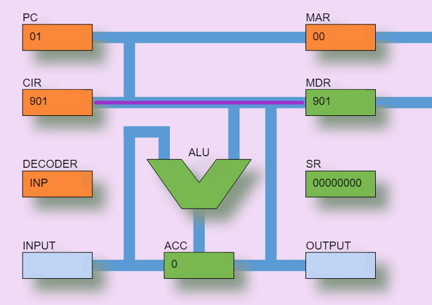
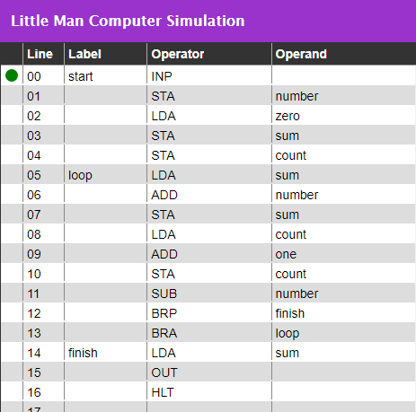
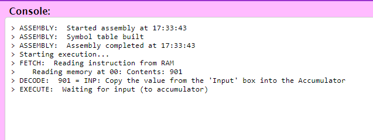
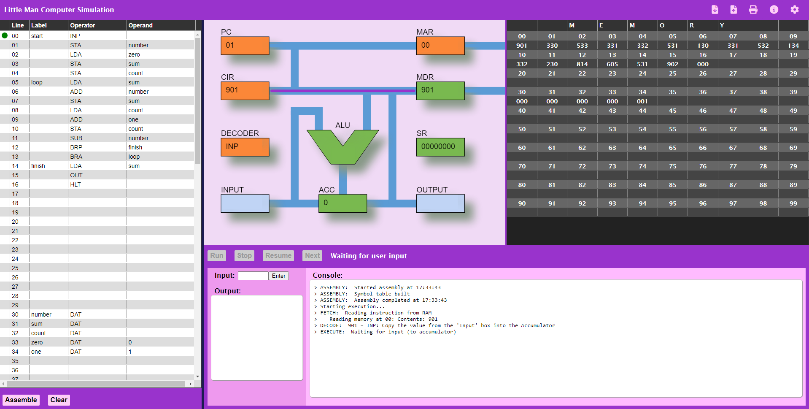

This site contains an implementation of the Little Man Computer
The simulator is implemented using JavaScript, HTML and CSS and runs entirely client-side.
It is fully functional, and includes several example programs.
My intention was to create a simple-to-use web application which would help students to program in the LMC language.
The app features a clickable CPU diagram which is animated when an LMC program executes, showing the values in the main registers, data flows within the CPU, and memory read and write activity.

Clicking on a register when the program is not running will display a brief description. The registers shown are:
| Register | Name | Purpose |
|---|---|---|
| PC | Program Counter | The Program Counter contains the address of the next instruction to be fetched from memory. If you watch carefully as a program is running, you will see that the PC immediately increments by one as soon as an instruction is read from Memory. The Branching instructions ('BRA', 'BRZ', and 'BRP') can change the value in the PC, causing program execution to 'jump' to the new address in Memory. |
| CIR | Current Instruction Register | The Current Instruction Register contains the last instruction fetched from Memory via the MDR. Before the instruction can be executed, it must be decoded into a set of signals by the DECODER component |
| Decoder | Decoder | The Decoder takes the instruction code from the CIR and turns it into a set of signals to control the execution of the instruction. |
| Input | Input Mailbox | The 'mailbox' used to hold user input before it is moved to the Accumulator. When an 'INP' instruction is executed, the user is prompted to enter a value which will be placed into this 'mailbox' and then moved into the Accumulator. |
| ALU | Arithmetic and Logic Unit | The Arithmetic and Logic Unit is responsible for the 'ADD' and 'SUB' operations. In a modern processor, the ALU would be much more complex of course, but the Little Man Computer instruction set only has these two arithmetic operations. |
| ACC | Accumulator | The Accumulator normally holds the result of the latest opertion carried out by the ALU, but a value can also be directly loaded into the Accumulator from Memory, using the 'LDA' instruction. We can also write the current value of the Accumulator into Memory using the 'STA' instruction. Finally, the Accumulator can be loaded from user input (the 'INP' instruction) or used as output to the user (the 'OUT' instruction) |
| MAR | Memory Address Register | The Memory Address Register holds an address for a Memory location which is about to be read from, or written to. In a read operation (which could be fetching an instruction or reading data), the value at the memory address will be retrieved and placed in the MDR. In a write operation (as part of an 'STA' instruction), the value in the MDR will be written to Memory at this address. |
| MDR | Memory Data Register | The Memory Data Register holds a value which has either been read from Memory, or which is about to be written to Memory. It is important to note that this value can be either an instruction or data. In the case of an instruction, this will always have been read from Memory as part of the Fetch-Execute-Decode cycle. In the case of data, the value may have been read from memory (in an 'LDA', 'SUB' or 'ADD' instruction) or be written to Memory (in an 'STA' instruction). |
| SR | Status Register | The Status Register is an important component in any modern processor. When the ALU has completed an operation, the Status Register is updated with information about that operation. In this simulator, only three bits are used: the Least Significant Bit (bit 0) is an overflow flag - if the result of an addition is greater than 999, or the result of a subtraction is less than -999, this flag will be set to 1. Bit 1 is used to record whether the result of an operation is zero, and bit 2 is used to record whether the result of an operation is positive (zero or more). Bits 1 and 2 are used in the 'BRZ' and 'BRP' operations. |
| Output | Output Mailbox | The 'mailbox' used to hold output from the Accumulator. When an 'OUT' instruction is executed, the value currently held in the Accumulator is moved into this mailbox and then displayed to the user. |
The code editor is based on a table design, making it easy to separate labels, operators, and operands
When a program is running, the current line of code is shown with a green dot, and the value of variables is updated in the Code Editor as well as in memory

Programs can be saved to local disk storage, uploaded from local storage, and converted to PDF for printing (or including in project reports).
When an LMC program is running, the console provides a summary of each operation.

The Little Man Computer simulator app can be found here

If you have any questions or comments on this LMC simulator, please contact me
The source code for this LMC simulator is available under the GNU General Public License v3.0.